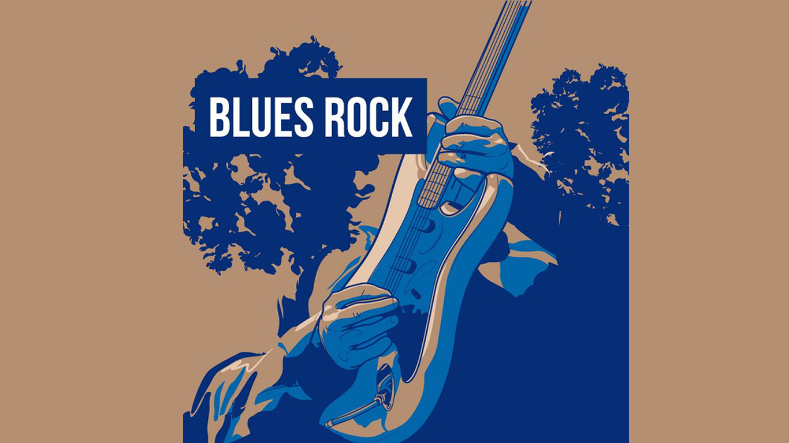

BLUES ROCK
Cuando el blues americano empezó a llegar masivamente al Reino Unido en los finales de los 50, impactó enormemente en las bandas británicas del momento. Estas aportaron el rock de donde surgÌan, y el instrumento de su preferencia: la guitarra eléctrica. Aunque este instrumento no era el de preferencia en el mundo del Blues, ello no fue óbice para que las nuevas bandas la usaran para absorber todo el empuje emocional del Blues de posguerra integrarlo en su propia visión del rock.
De esa confluencia, surge la rama principal del Blues Rock. Básicamente, versionaban las canciones del Blues americano con un tempo más rápido y un sonido más agresivo típico del rock, intercalando esas improvisaciones típicas del jazz. Estas características siguen siendo las señas maestras del género. El sonido clave del Blues Rock lo comporta la guitarra eléctrica, el bajo y la batería. Muchas bandas incluyen lo que llaman un Harp, que es en realidad una armónica de 10 o 16 agujeros.
Mientras algunas veces la voz es otro instrumento básico, no siempre es el caso, pues podemos encontrar con facilidad piezas puramente instrumentales. El bajo eléctrico, o varios tipos de teclado también son usados frecuentemente, pero ninguno llega a definir el estilo.
Entre sus representantes más destacados se encuentran AC/DC, Aerosmith, Alabama shakes, Big brothers & the holding company, blue cheer.
